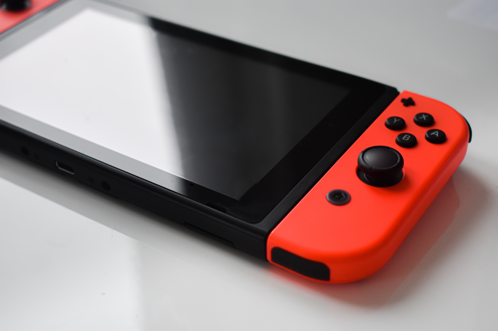
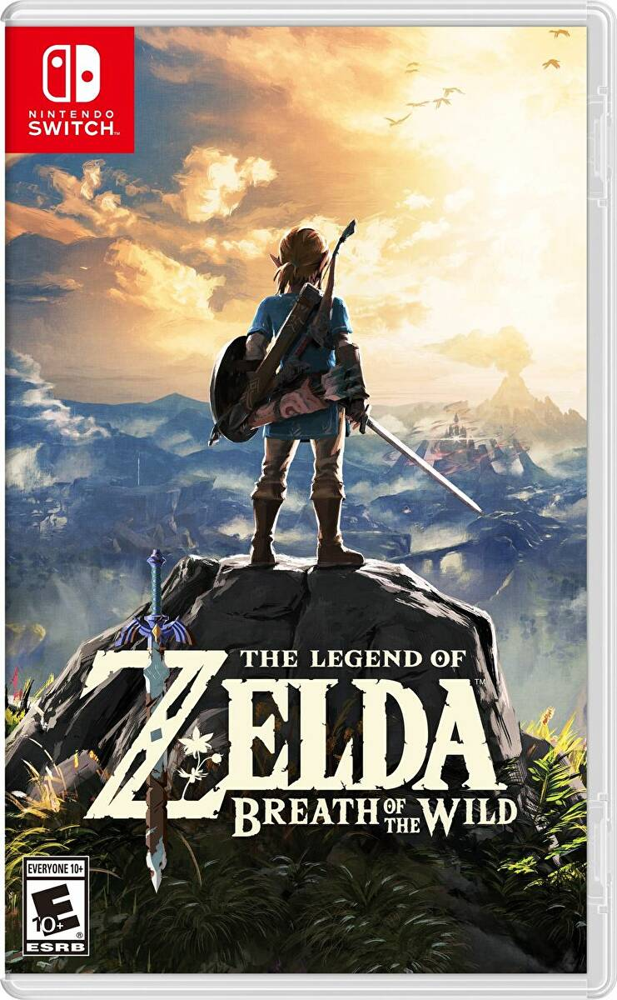
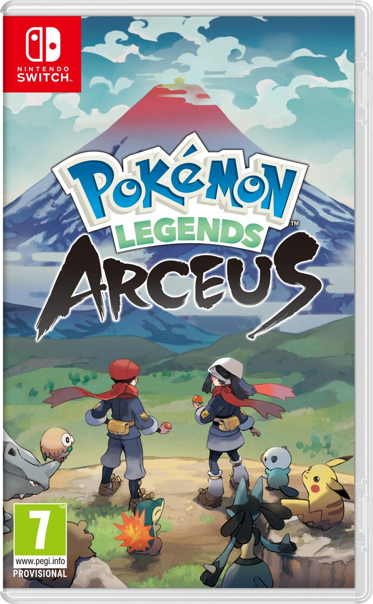
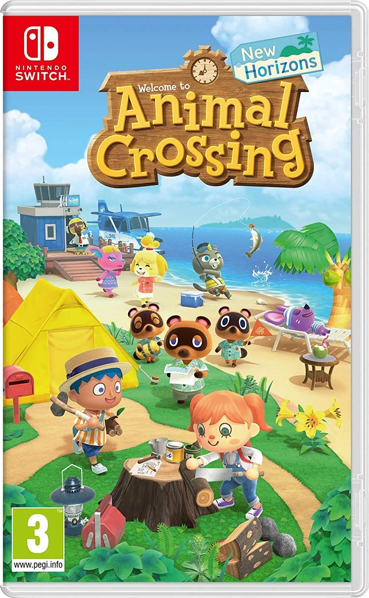
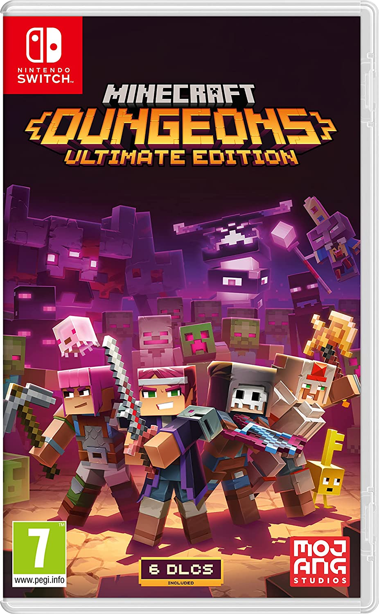
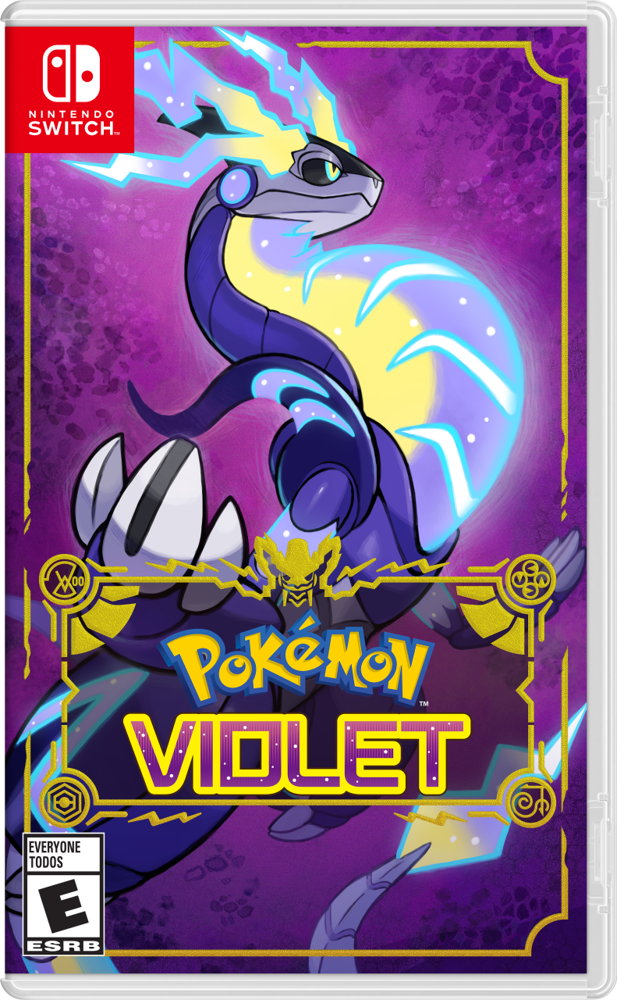

Switch
Console
|
The Switch is Nintendos current console, it was released in 2017 with the lite
version released in 2019. It is a portable handheld console that also comes with
a dock which enabled you to attatch it to the tv and play there also, it has
removeable controllers (joy-cons) which you can get in many different colours for
customisation.
|
 |
My Top Rated
|  |
The Legend of Zelda: Breath of the WildThis game has held the top spot for me since the start, it was the first game I played and nothing is yet to live up to the experience I had playing this. The art is beautiful and the game play challenging. |
Official Top Rated

|
Mario Kart 8:
|
Game Reviews
Pokemon Legends:
Arceus

After hearing about this game pre-release, I had
high hopes, and I was not dissapointed! this was a
fantastic addition to the Pokemon series, a whole
new way of capturing pokemon, and I felt it gave me
a real drive to finish the PokeDex this time.
I was most looking forward to exploring the open-world
and I loved every second, unlocking different ways to
get around after each 'boss' battle kept me engaged with
the storyline, being able to see shiny pokemon made it
super fun to shiny hunt! I can only hope this won't be
the only 'Legends' game.
Animal Crossing:
New Horizons

As far as relaxing games go, this wins, it is so
laid back and allows you to go at your own pace
completely, theres plenty to do when you first
begin, and so much stuff to collect to decorate
your home and your whole island with.
When I heard the news of this games release, I
was over the moon, with todays consoles capabilities
for online play, I was thinking of all the
possibilities, I wanted everyone I knew to play
this with me! To see that you could decorate your
whole island, not just your house, and on top of that
completely shape the land, made me so excited to get
stuck in!
Minecraft
Dungeons

This game, as the title suggest, is a dungeon
crawler, with hack and slash combat. You go
into the dungeons, filled with all types of
mobs and get past traps and puzzles, then a
final boss to get out alive with your loot.
As you progress you unlock new areas and
difficulties, there is tons of DLC content
for very good prices, and this is super fun
to play with friends, I never thought I would
enjoy this game when my partner suggested I
play with him, but I quickly got into it!
Pokemon:
Scarlet & Violet

I was looking forward to this game for some time
after 'Pokemon Legends: Arceus' was released,
knowing they were keeping the open-world but
keeping everything else from the main game series.
I did have a big problem with the quality of this
game in regards to the fps, it just felt very poor
and unfinished coming from such a huge name. But I
have to admit, regardless of the issues, I really
enjoyed this game and the story, there was a lot of
content and so much exploring to do. I hope the next
game is way more polished when it is released.